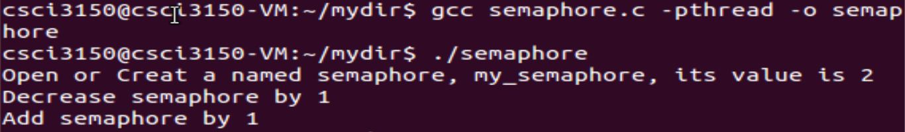

Semaphore API in Linux
POSIX named semaphore APIs we use in this lab are shown in the below table. You can look up manual pages for details of these functions. semaphore.c shows how to use these functions to create, operate and remove named semaphore. Try it and make sure you understand it. Note that programs using the POSIX semaphores API must be compiled with -pthread to link against the real-time library. So you need compile semaphore.c like this:
gcc semaphore.c -pthreaad -o semaphore
| Function | Description |
| sem_open | Opens/creates a named semaphore for use by a process |
| sem_wait | Wait on a semaphore |
| sem_post | Signal a semaphore |
| sem_close | Deallocates the specified named semaphore |
| sem_unlink | Removes a specified named semaphore |
/*semaphore.c*/
#include <fcntl.h> /* For O_* constants */
#include <sys/stat.h> /* For mode constants */
#include <semaphore.h>
#include <stdio.h>
int main(int argc, char * argv[]){
char * name = "my_semaphore";
int VALUE = 2;
sem_t * sema;
//If semaphore with name does not exist, then create it with VALUE
printf("Open or Creat a named semaphore, %s, its value is %d\n", name,VALUE);
sema = sem_open(name, O_CREAT, 0666, VALUE);
//wait on semaphore sema and decrease it by 1
sem_wait(sema);
printf("Decrease semaphore by 1\n");
//add semaphore sema by 1
sem_post(sema);
printf("Add semaphore by 1\n");
//Before exit, you need to close semaphore and unlink it, when all processes have
//finished using the semaphore, it can be removed from the system using sem_unlink
sem_close(sema);
sem_unlink(name);
return 0;
}

Semaphore specification
Under Linux, the IPC comes in two flavors, the traditional System V IPC and the newer POSIX IPC. Both of them support semaphore. You can see their difference here.